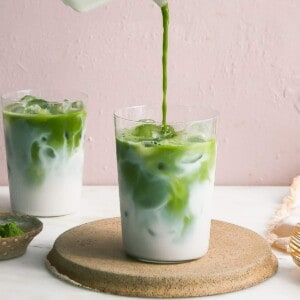

Home
Iced Matcha Latte

Description
This recipe will show you how to make an Iced Matcha Latte
Matcha powder is made up of ground up green tea leaves. Instead of brewing a cup of tea with tea leaves, this is ground up leaves that are dissolved into the warm/hot water.
Ingredients
- 2 teaspoons matcha powder
- 1 to 2 tablespoons hot water
- 1 cup warm water
- Ice
- Milk of choice
Steps
- In a measuring cup or bowl, add the matcha powder. Pour in the 1 to 2 tablespoons of hot water and whisk (electric or matcha whisk works) until the matcha has fully incorporated into the water. This should create almost a bit of a paste.
- Pour in the remaining 1 cup of water and mix. Transfer to the fridge or freezer to chill for about 15 minutes.
- Fill two glasses full of ice and add your milk of choice so the glass is about 3/4 of the way full. If you like, this is a great time to add any simple syrup. Lastly, pour in the chilled matcha and stir.